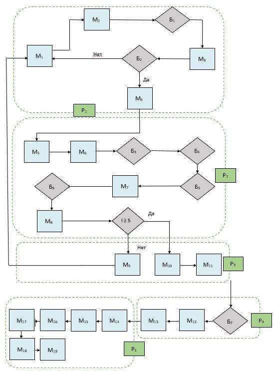

Інтелектуальна геопросторова економічна система розвитку території
В сучасних умовах наростання кризових явищ, негативного впливу зовнішніх і внутрішніх факторів, пандемії COVID - 19, стагнаційних процесах, які спостерігаються в економіці, особливе значення має застосування сучасних інструментів і підходів, які забезпечують її розвиток. У цьому контексті особливе значення має розробка і впровадження інформаційних систем і технологій, інструментарію інтелектуальної геопросторової економіки, як нового напряму, який базується на положеннях і підходах теорії економічного розвитку, використання технологій формування інтелекту і інструментарію інформаційних і геоінформаційних систем.
Проблемні явища, які проявляються в багатьох економіках держав, формують необхідність переосмислення
підходів до управління
економічними процесами на різних рівнях, особливо забезпечення дистанційної форми з використанням
інформаційних і геопросторових систем.
Синтез сучасних методів, моделей, систем дозволяє побудувати інтелектуальну геопросторову економіку.
Крім того, за останні роки
розвиток інтернет-технологій і цифрової економіки, інтелектуальних і геопросторових систем вказує на
необхідність формування
та реалізації інтелектуальної геопросторової економіки (intelectgeospates) на різних рівнях.
На початок...
Концепція базується на теоретико-методологічної платформою щодо визначення інтелектуальної геопросторової
економіки як системи,
яка включає інтелектуальні, інформаційні, геопросторові, економічні та безпекові елементи, спрямованих
на забезпечення дистанційного
управління формуванням і використанням усіма видами ресурсів на державному, регіональному, місцевому та
інших рівнях, враховуючи
особливості взаємодії стейкхолдерів, впливу зовнішніх та внутрішніх факторів, що формує цифрову
економічне середовище.
На початок...
Охарактеризовані елементи інтелектуальної геопросторової економіки:
інтелектуальний: формуються і використовуються системи розвитку інтелекту, які виступають «двигуном» і «мозковим центром» для визначення кількісних і якісних економічних параметрів на різних рівня (державному, регіональному, місцевому і т.д.). Інструменти формування і використання системи розвитку інтелекту складаються з:
- методів;
- моделей;
- параметрів;
На інтелектуальному рівні здійснюється оцінка економічних показників, здійснюється їх прогнозування, визначаються напрями підвищення ефективності формування і використання всіх видів ресурсів і взаємодії стейкхолдерів, розробки стратегічних контурів розвитку економічних систем на різних рівнях;
геопросторовий: здійснюється геопросторовий аналіз економічних процесів з використанням геоінформаційних систем і технологій, який дозволяє визначити напрямки та особливості використання всіх видів ресурсів, з огляду на просторові особливості територій та рівень взаємодії стейкхолдерів. Для формування геопространственного рівня використовується інструментарій:
- геофакторного аналізу;
- геоінформаційні системи;
- геоінформаційні технології;
- Web геоінформаційні системи.
економічний: формує кількісну основу економічних процесів шляхом розробки і використання аналітико-діагностичної системи показників, враховуючи особливості інформаційно-аналітичного та нормативно-правового забезпечення, взаємодії стейкхолдерів. Для формування економічного рівня використовується інструментарій:
- економічного аналізу;
- фінансового аналізу;
- стратегічного аналізу;
- економіко-математичного моделювання;
- нейронного аналізу;
- діагностично-аналітичної системи;
- інтегрального методу;
- нормативно-правового забезпечення;
- інформаційно-аналітичного забезпечення.
На економічному рівні розробляється аналітико-діагностична система показників (мал. 1.1).

Мал. 1.1 - Аналітично-діагностична система показників в інтелектуальної геопросторової економіки
На локальному рівні визначаються локальні показники з використанням експертних і кількісних методів оцінки, враховуючи рівень економіки, нормативно-правове забезпечення, напрямки та особливості взаємодії зі стейкхолдерами. Локальні показники формуються виходячи з вхідних показників, які визначаються на основі нормативно-правового або існуючого інформаційно-аналітичного забезпечення, аналітичними методами або методами експертного аналізу.
Діагностика результатів оцінки локальних показників здійснюється на основі розроблених значень шкал показників, встановлених їх нормативних значень. Шкали розробляються і встановлюються нормативні значення для кожного локального показника.
На узагальнюючому рівні оцінюються узагальнюючі показники, які групуються на основі локальних показників в залежності від напрямків і особливостей економічних відносин, розвитку територій, геопространственного забезпечення, екологічної та інвестиційної політики і ін. На узагальнюючому рівні використовуються узагальнюючі моделі і коефіцієнти важливості кожного показника.
Діагностика результатів оцінки узагальнюючих показників здійснюється на основі розробленої шкали і встановлених нормативних значень.
На інтегральному рівні визначається інтегральний показник розвитку геопросторової економічної системи з використанням інтегральної моделі і узагальнюючих показників. На основі значень інтегрального показника виявляються диспропорції в системі і розробляються напрямки стратегічного розвитку;
безопековий: спрямований на формування і використання інформаційної системи безпеки, яка дає змогу здійснювати інформаційну, фінансово-економічну, корпоративну, стейкхолдерную, силову безпеку. Цей елемент розробляється і реалізується шляхом використання інструментарію:
- методи і моделі інформаційної безпеки;
- інструментарію фінансово-економічної безпеки;
- методів і моделей корпоративної і силовий безпеки;
- забезпечення безпеки взаємодії стейкхолдерів.
Безпековий елемент формується з декількох рівнів, що дозволяється забезпечити багаторівневий контроль і безпеку.
Загальна схема формування інтелектуальної геопросторової економіки представлена на мал. 1.2.
Мал. 1.2 - Загальна схема формування інтелектуальної геопросторової економіки
Геопросторова складова формується і реалізується на основі алгоритму розробки та роботи баз геоданіх показників інтелектуальної геопросторової економіки:
Мал. 1.3 - Алгоритм розробки і роботи баз геоданіх показників інтелектуальної геопросторової економіки
Алгоритм створення просторової інформації для моделювання та аналізу даних показників інтелектуальної геопросторової економіки представлений у вигляді сукупності взаємопов'язаних операцій з розробки і підготовки баз геоданих показників в програмному середовищі ГІС.
Система геоінформаційного забезпечення показників інтелектуальної геопросторової економіки з урахуванням вхідних, локальних, узагальнюючих і інтегральних даних реалізується за наступними складовими:
- Застосування програмного забезпечення для розробки геоінформаційної системи.
- Використання бази геоданих показників інтелектуальної геопросторової економіки для створення набору шарів геоінформаційної системи.
- Аналіз узагальнюючих інтегральних показників інтелектуальної геопросторової економіки з урахуванням територіальних і законодавчих характеристик.
- Вибір технології оцінки інтегральних показників інтелектуальної геопросторової економіки.
- Застосування програмного модуля ГІС і технології математичного моделювання показників територіального розвитку інтелектуальної геопросторової економіки.
- Створення моделей процесу і аналізу показників інтелектуальної геопросторової економіки.
- Розробка набору шарів узагальнюючих показників.
- Аналіз та розробка шару інтегральних показників інтелектуальної геопросторової економіки.
- Застосування шкали впливу даних моделювання показників інтелектуальної геопросторової економіки.
- Візуалізація даних, подання геоінформаційної системи інтелектуальної геопросторової економіки.
Алгоритм реалізації ГІС інтелектуальної геопросторової економіки представлені на мал 1.4.
Мал. 1.4 - Алгоритм реалізації ГІС інтелектуальної геопросторової економіки
Приклади використання ГІС інтелектуальної геопросторової економіки на регіональному рівні представлено на мал. 1.5 - 1.11.

Мал. 1.5 - Геоінформаційна карта узагальнюючих просторових показників територіального розвитку використання земель регіонів в системі інтелектуальної геопросторової економіки

Мал. 1.6 - Геоінформаційна карта узагальнюючих містобудівних показників територіального розвитку використання земель регіонів в системі інтелектуальної геопросторової економіки

Мал. 1.7 - Геоінформаційна карта узагальнюючих інвестиційних показників територіального розвитку використання земель регіонів в системі інтелектуальної геопросторової економіки

Мал. 1.8 - Геоінформаційна карта узагальнюючих екологічних показників територіального розвитку використання земель регіонів в системі інтелектуальної геопросторової економіки

Мал. 1.9 - Геоінформаційна карта інтегральних показників територіального розвитку використання земель регіонів в системі інтелектуальної геопросторової економіки

Мал. 1.10 - Геоінформаційна 3-D модель моніторингу стану територіального розвитку використання земель регіонів в системі інтелектуальної геопросторової економіки

Мал. 1.11 - Геоінформаційна 3-D модель моніторингу стану і прогнозних тенденцій територіального розвитку використання земель регіонів в системі інтелектуальної геопросторової економіки
Інформаційною основою для формування геопросторової складовою є: землевпорядна документація, карти М: 500, 1000, 2000, 5000, дані по просторовим, економічним, інвестиційним, екологічним, містобудівним, морським показниками;
інформаційний: формується інформаційна платформа функціонування інтелектуальної геопросторової економічного системи, яка є її «оболонкою» і пов'язує в єдине ціле елементи.
Загальна схема технології розробки інформаційного рівня інтелектуальної геопросторової економічної системи представлена на рис. 1.12.
Із загальної схеми технології розробки інформаційного рівня інтелектуальної геопросторової економічної системи реалізуються основні етапи:
- визначення системи чинників формування геопросторової економічної системи на основі інформаційно-аналітичного та нормативно-правового забезпечення в залежності від рівня виконання завдання (держава, регіон, місто, інші територіальні об'єднання чи господарюючі суб'єкти);
- формування багаторівневої аналітико-діагностичної системи показників формування геопросторової економічної системи на основі певної системи факторів, фундаментальних і прикладних розробок три рівня: локальний, узагальнюючий і інтегральний. Кожному рівню відповідають показники, які формують ієрархічну систему;
- розробка методологічного підходу до інтегральної оцінки показників геопросторової економічної системи, який включає сукупність взаємопов'язаних етапів (рис. 1.13);
- оцінка інтегрального показника розвитку геопросторової економічної системи здійснюється на основі використання методологічного підходу. При цьому методи, моделі оцінки розробляються і використовуються в економічному блоці відповідно до показників визначених у діагностично-аналітичній системі;
- побудова геопрстранственной економічної системи з використанням геоінформаційних та інформаційних технологій, технологій забезпечення інформаційної безпеки. Крім того, використовується програмне забезпечення щодо використання отриманих даних в інформаційній системі, формування баз.
Мал. 1.12 - Загальна схема технології розробки інформаційного рівня інтелектуальної геопросторової економічної системи даних, їх прогнозування, розвитку штучного інтелекту, геоінформаційних систем, систем інформаційної безпеки;
Мал. 1.13 - Розробка методологічного підходу до інтегральної оцінки показників геопросторової економічної системи.
На основі використання представленої технології розробляються заходи щодо підвищення ефективності і результативності, забезпечення розвитку системи, визначення і реалізації стратегічних контурів розвитку системи.
Для розробки інформаційної складової використовується інструментарій: програмного забезпечення (С ++, Python), штучного інтелекту, програмного забезпечення щодо формування інформаційної безпеки.
Для реалізації інформаційної складової розробляється апаратно-інформаційна модель геопросторової економічної системи.
Використовується апаратно-інформаційна модель в сфері економічних відносин для визначення рівня геопространственного розвитку на різних рівнях економіки (державному, регіональному, інших террторіальних об'єднань, підприємств), його прогнозування та забезпечення підвищення в сучасних умовах розвитку і функціонування економічекіх суб'єктів і взаємодії стейкхолдерів.
Суть апаратно-інформаційної моделі полягає в застосуванні технології визначення рівня геопростанственного розвитку на різних рівнях розвитку економічних відносин на основі використання інформаційно і геоінформаційного апарату, багаторівневої аналітично-діагностичної системи показників, напрямків і результатів інтегральної оцінки, технологій штучного інтелекту та інформаційної безпеки.
Поставлена задача досягається тим, що в розробці і застосуванні апаратно-інформаційної моделі визначення рівня геопростанственного розвитку на різних рівнях розвитку економічних відносин на основі сукупності технічних процедур і технології, що враховують взаємодію інформаційної, геопростанственной, економічної, інтелектуальної та безпекової складових, враховуючи особливості та напрямки взаємодії стейкхолдерів.
Результати застосування апаратно-інформаційної моделі: дозволяє побудувати інформаційну систему інтелектуальної геопросторової економіки на різних її рівнях, реалізується із застосуванням спеціальних інформаційно-розрахункових і геопростанственних комплексів і зберігається на інформаційних носіях і інформаційному середовищі.
В основу корисної апаратно-інформаційної моделі поставлена задача - розробка технології визначення рівня розвитку інтелектуальної геопросторової економіки на різних її рівнях на основі застосування комплексу взаємопов'язаних інформаційних модулів і апаратних комплексів. Представлена апаратно-інформаційна модель дозволяє сформувати інформаційну базу за рівнем розвитку інтелектуальної геопросторової економіки на різних її рівнях для прийняття рішень і зростання ефективності основних напрямків, враховуючи особливості взаємодії стейкхолдерів. Апаратно-інформаційна молінь дозволяється дистанційно керувати економічними відносинами, всіма видами ресурсів на разлічниз рівнях.
Апаратно-інформаційна модель визначення рівня розвитку інтелектуальної геопросторової економіки на різних її рівнях включає наступні модулі і блоки (мал. 1.14):
- Вхідний модуль збору інформації про чинники, які формують інформаційне забезпечення рівня розвитку інтелектуальної геопросторової економіки на відповідному рівні (М1).
- Апаратний модуль зберігання інформації про фактори рівня розвитку інтелектуальної геопросторової економіки на відповідному рівні на інформаційних носіях (М2).
- Апаратний блок відбору факторів за певними критерію (Б1).
- Інформаційний модуль побудови багаторівневої системи чинників, що формують інформаційне забезпечення рівня розвитку інтелектуальної геопросторової економіки на відповідному рівні М3).
- Апаратний блок формування ієрархічної багаторівневої системи факторів (Б2) із застосуванням методу класифікації ієрархій та визначення можливостей реагування на зміни, що відбуваються в системі і технологій штучного інтелекту.
- Апаратний модуль зберігання інформації про багаторівневої системи на інформаційних носіях (М4).
- Комплекс представлених модулів і блоків формують перший рівень апаратно-інформаційної моделі та систему інформаційної безпеки (Р1).
- Апаратний модуль переходу від факторів до показників на основі квазіметріческіх моделей (М5).
- Інформаційний модуль формування багаторівневої аналітико-діагностичної системи показників рівня розвитку інтелектуальної геопросторової економіки на відповідному рівні (М6).
- Апаратний блок визначення показників рівня розвитку інтелектуальної геопросторової економіки на відповідному рівні за певними методами і моделями на третьому рівні системи (Б3) з використанням технологій штучного інтелекту.
- Апаратний блок визначення показників рівня розвитку інтелектуальної геопросторової економіки на відповідному рівні за певними методами і моделями на другому рівні системи (Б4) з використанням технологій штучного інтелекту.
- Апаратний блок визначення показників рівня розвитку інтелектуальної геопросторової економіки на відповідному рівні за відповідними методами і моделями на першому рівні системи (Б5) з використанням технологій штучного інтелекту.
- Апаратний модуль зберігання інформації за певними показниками багаторівневої діагностично-аналітичної системи на інформаційних носіях (M7).
- Апаратний блок визначення інтегрального показника рівня розвитку інтелектуальної геопросторової економіки на відповідному рівні з використанням відповідних методів і моделей і технологій штучного інтелекту (Б6).
- Апаратний модуль зберігання інформації за певним інтегрального показника багаторівневої діагностично-аналітичної системи на інформаційних носіях (M8).
- Комплекс представлених модулів і блоків формують другий рівень апаратно-інформаційної моделі та систему інформаційної безпеки (Р22).
- Апаратний модуль відмови від реалізації проектних рішень щодо розвитку інтелектуальної геопросторової економіки на відповідних рівнях (M9) з використанням технології штучного інтелекту і побудованої шкали показників.
- Інформаційний модуль прийняття проектних рішень за інтегральним показником і побудованої шкалою (M10) з використанням технології штучного інтелекту і побудованої шкали показників.
- Апаратний модуль реалізації проектних рішень щодо розвитку інтелектуальної геопросторової економіки на відповідних рівнях (M11) з використанням технології штучного інтелекту.
- Комплекс представлених модулів і блоків формують третій рівень апаратно-інформаційної моделі та систему інформаційної безпеки (Р3).
- Апаратний блок прогнозування інтегрального показника рівня розвитку інтелектуальної геопросторової економіки на відповідному рівні з використанням відповідних методів і моделей і технологій штучного інтелекту (Б7).
- Апаратний модуль зберігання інформації по спрогнозувати інтегральним показником багаторівневої діагностично-аналітичної системи на інформаційних носіях (M12).
- Апаратний модуль реалізації проектних рішень щодо розвитку інтелектуальної геопросторової економіки на відповідних рівнях на прогнозних значеннях (M13) з використанням технології штучного інтелекту.
- Комплекс представлених модулів і блоків формують четвертий рівень апаратно-інформаційної моделі та систему інформаційної безпеки (P4).
- Апаратний модуль простроенной геоінформаційних карт входять і локальних показників розвитку інтелектуальної геопросторової економіки на відповідних рівнях (M14) з використанням геоінформаційних систем і технологій.
- Апаратний модуль простроенной геоінформаційних карт узагальнюючих показників розвитку інтелектуальної геопросторової економіки на відповідних рівнях (M15) з використанням геоінформаційних систем і технологій.
- Апаратний модуль простроенной геоінформаційних карт інтегрального показника рівня розвитку інтелектуальної геопросторової економіки на відповідних рівнях (M16) з використанням геоінформаційних систем і технологій.
- Апаратний модуль побудованим 3-D геоінформаційних моніторингових карт прогнозного інтегрального показника рівня розвитку інтелектуальної геопросторової економіки на відповідних рівнях (M17) з використанням геоінформаційних систем і технологій.
- Апаратний модуль зберігання інформації по геоінформаційному забезпечення інтелектуальної геопросторової економіки (M18).
- Апаратний модуль реалізації стратегічних проектних рішень щодо розвитку інтелектуальної геопросторової економіки на відповідних рівнях з урахуванням просторового забезпечення (M19) з використанням технології штучного інтелекту.
- Комплекс представлених модулів і блоків формують п'ятий рівень апаратно-інформаційної моделі та систему інформаційної безпеки (P5).

Мал. 1.14 - Апаратно-інформаційна модель рівня розвитку інтелектуальної геопросторової економіки на відповідному рівні
Апаратно-інформаційна модель рівня розвитку інтелектуальної геопросторової економіки на відповідному рівні реалізується в такий спосіб:
- На основі збору інформації про чинники (M1), з огляду на економічні, технологічні, стейкхолдерні, просторові, інвестиційні, містобудівні, екологічні та інші особливості, ознаки земель через апаратні засоби зберігання інформації (M2) і відбору факторів (Б1), формується система факторів, що впливають на рівень розвитку інтелектуальної геопросторової економіки на відповідному рівні (M3). Для відбору чинників використовується технологія штучного інтелекту. На основі сформованої системи формується багаторівнева система факторів (Б2), що включає три рівня факторів. Якщо побудована багаторівнева система факторів за встановленими критеріями, то здійснюється збереження інформації апаратними засобами (M4). Якщо "Ні", то знову повертаємося до оновлення інформації про фактори рівня розвитку інтелектуальної геопросторової економіки, їх відповідності сучасним умовам. Представлена група модулів і блоків формують перший рівень апаратно-інформаційної моделі рівня розвитку інтелектуальної геопросторової економіки на певному рівні, будується інформаційний захист від зовнішнього і внутрішнього впливу (Р1).
- Перехід від першого рівня моделі до іншої здійснюється через апаратний модуль трансформації факторів з показниками на основі квазіметрічніх моделей (M5). На основі проведеного переходу, побудовано інформаційний модуль формування багаторівневої системи показників рівня розвитку інтелектуальної геопросторової економіки на певному рівні (M6), в рамках якої визначаються відповідні показники на третьому (Б3), другому (Б4), першому (Б5) рівнях системи і використанням технології штучного інтелекту. Результати оцінки показників зберігаються на апаратних засобах (інформаційних носіях) модуля зберігання інформації (M7). Потім в апаратній блоці визначаються інтегральний показник рівня розвитку інтелектуальної геопросторової економіки на певному рівні за відповідними методами і моделями (Б6), результати якого на інформаційних носіях в апаратній блоці (M8). Слід зазначити певний на попередньому блоці інтегральний показник по побудованої шкалою відповідності автоматично перевіряється рівень відповідності з прийняття та реалізації рішень по рівню розвитку інтелектуальної геопросторової економіки на відповідному рівнем. Якщо інтегральний показник більше або дорівнює 5 (I ³ 5), то здійснюється перехід на третій рівень апаратно-інформаційної моделі визначення інвестиційної привабливості земель регіону. Якщо "Ні", то на третьому рівні моделі реалізується апаратний модуль відмови від реалізації проектних рішень щодо забезпечення розвитку інтелектуальної геопросторової економіки (M9). При цьому використовується технологія штучного інтелекту, економічні методи і моделі, формується система інформаційної безпеки другого рівня (P2).
- На третьому рівні (P3) моделі реалізується інформаційний модуль прийняття проектних рішень за інтегральним показником і побудованої шкалою (M10) і здійснюється перехід до апаратного модуля реалізації проектних рішень щодо забезпечення розвитку інтелектуальної геопросторової економіки (M11). Формується третій рівень і система безпеки. Формування та прийняття рішень здійснюється на основі використання технології штучного інтелекту.
- На четвертому рівні (P4) здійснюється прогнозування інтегрального показника рівня розвитку інтелектуальної геопросторової економіки на відповідному рівні з використанням відповідних математичних методів і моделей, нейронного моделювання і технологій штучного інтелекту (Б7). Отримані результати зберігаються на інформаційних носіях (M12). На основі отриманих значень здійснюється реалізація проектних рішень щодо розвитку інтелектуальної геопросторової економіки на відповідних рівнях (M13) з використанням технології штучного інтелекту. Формуються стратегічні контури і напрямки розвитку економіки. Здійснюється побудова системи інформаційної безпеки.
- На п'ятому рівні (P4) здійснюється побудова геоінформаційних карт за показниками розвитку інтелектуальної геопросторової економіки на відповідних рівнях (M14), (M15), (M16) з використанням геоінформаційних систем і технологій. Здійснюється побудованим 3-D геоінформаційних моніторингових карт прогнозного інтегрального показника рівня розвитку інтелектуальної геопросторової економіки на відповідних рівнях (M17). Представлена інформація зберігається на інформаційних носіях (M18). З урахуванням просторового забезпечення здійснюється реалізація стратегічних проектних рішень щодо розвитку інтелектуальної геопросторової економіки на відповідних рівнях (M19М19) з використанням технології штучного інтелекту.
Таким чином, апаратно-інформаційна модель рівня розвитку інтелектуальної геопросторової економіки на відповідному рівні відображає системне інформаційне забезпечення економічних процесів і відносин для зростання їх ефективності, формування та використання на відповідних рівнях комплексних інформаційних, геоінформаційних, технічних засобів, математичних методів і моделей, економічного інструментарію, технології штучного інтелекту. Апаратно-інформаційна модель забезпечує повноту і обгрунтованість прийняття рішень групами стейкхолдерів на різних стадіях розробки і реалізації економічних процесів, дистанционность, керованість всіма видами ресурсів і активів, зниження витрат на формування і використання персоналу, забезпечення повного контролю в системі управління економічними процесами і відносинами. На основі апаратно-інформаційна модель рівня розвитку інтелектуальної геопросторової економіки формується цифрова економіка для різних рівнів з використанням комплексу сучасних інтелектуальних, інформаційних, геоінформаційних технологій і математичного апарату.
На початок...
Апаратно-інформаційна модель визначення рівня розвитку інтелектуальної геопросторової економіки на відповідному рівні формує системне середовище інформаційного забезпечення розвитку інтелектуальної геопросторової економіки, забезпечує реалізацію проектів і проектних рішень шляхом застосування певних блоків і модулів з урахуванням просторових особливостей і рівня взаємодії стейкхолдерів. Технологічно апаратно-інформаційна модель включає інформаційні, геоінформаційні та технічні засоби формування, збереження інформації, її обробки і спеціальні засоби визначення рівня розвитку інтелектуальної геопросторової економіки на відповідному рівні.
Апаратно-інформаційна модель рівня розвитку інтелектуальної геопросторової економіки на відповідному рівні відрізняється тим, що будується інформаційна діагностично-аналітична система показників, яка дозволяє автоматизувати визначення рівня розвитку інтелектуальної геопросторової економіки, прийняття проектних рішень, враховуючи вплив факторів, просторових особливостей, стейкхолдерних відносин, забезпечує дистанційне управління всіма видами ресурсів і активів, повноту і достовірність отриманої інформації, використовуючи сучасні технології і штучний інтелект. Апаратно-інформаційна модель рівня розвитку інтелектуальної геопросторової економіки формує цифрову економіку на відповідному рівні.
На початок...